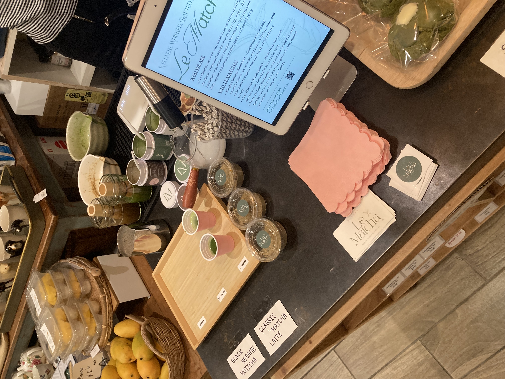

Lost Sock Roasters: A Not So-Hidden Hidden Gem
Lost Sock is one of the best coffee spots in DC, boasting the original Takoma location and a more recently opened location near the NoMa Metro. Lost Sock is a local roaster so they also supply other local cafes. Their Two Steps espresso is sweet and chocolatey, making it perfect for any milky drink. They have rotating single origins available too, so there is always something interesting to taste when you want to try something new.
While its popularity is already well known in the DMV, it might be a little less known that they have hits on so many levels, from pastries to breakfast sandwiches to rotating flavors of traditional and nontraditional empanadas (family recipe) to homemade syrups and seasonal beverages. Whether you want a simple high quality coffee, a flavorful snack, or a full breakfast spread, they got you covered. Even their matcha is decent.
Pro tip: ask what empanada flavors they have! Often they have additional flavors not printed on the main menu. And get the deal for 3 empanadas if you’re hungry or have someone to share with so you can try a few flavors.
Also, there is a tomato pie, Sundays only, that I have only heard about. I can only imagine it’s amazing.

Another side of Lost Sock’s success has nothing to do with the quality of the coffee. It’s the community aspect. When you approach the Takoma shop, you can already feel it. You can tell who the regulars are. Families flock between Lost Sock and the nearby Donut Run with its recognizable pink boxes of vegan donuts. The staff is friendly, knowledgeable, and quick; after a few visits, you’ll start recognizing them and they might start recognizing you too. In the wintertime, you can spot a pot simmering, and in the summer, maybe some carrots being peeled for juice? Somehow, even with its popularity and limited tables, you can usually grab a seat while you wait for your order.
This is a place to bring friends or go solo, and I like that.